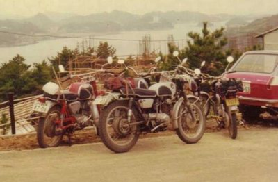

ホンダＣＬ７２ドリーム スーパースポーツ、ホンダが１９６２年にスクランブラーとして発売したバイクです。 空冷４サイクル２気筒ＯＨＣの２５０ＣＣで最高出力は２４ＰＳの９０００ｒｐｍ、公称最高速度110km/h（一部資料120km/h）です。 実際、エンジンオーバーホール後に110km/hを経験したことがあります。当時はマフラーの位置が片側上部にあり、また座高（エンジン下部まで位置）が高いのが好きで、階段でも登ることができた。

写真はバイクのカタログより

一番手前のバイクがCL72 （実際に乗っていたバイク）

バイクに乗っていた時のスタイル
戻る